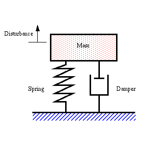
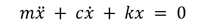
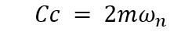
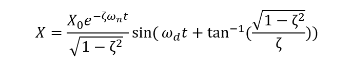
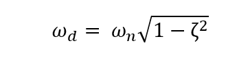
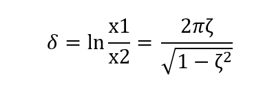
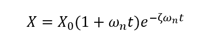
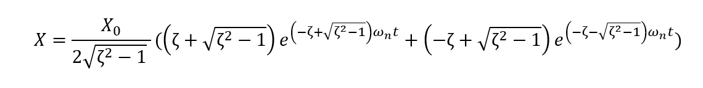

Vibration is something that most of us are familiar with; a vibrating force travels back and forth. An object that vibrates oscillates. In our everyday lives, we encounter several instances of vibration. When you set a pendulum in motion, it vibrates. A vibrating guitar string is plucked. Geological activity may cause huge vibrations in the form of earthquakes, and vehicles are driven on rugged terrain vibrate. We can say something vibrates in a variety of ways: we can touch it and sense the vibration; we can also see the back-and-forth movement of a vibrating object... Vibration may often produce audible sounds or heat that we can feel. Vibration in motorized equipment is simply the back-and-forth movement or oscillation of machines and parts, such as drive motors, powered devices (pumps, compressors, and so on), and bearings, shafts, gears, belts, and other mechanical system components.
The most common cause of emergency downtime in industries is the sudden failure of spinning machinery. On industrial machines, a wide range of complex vibration problems can occur. Wear-and-tear on roller bearings, issues with roll drive systems, and structural issues are just a few of them (including resonance). A detailed understanding of the machinery, as well as the ability to apply various diagnostic and damping techniques, is needed for successful analysis and resolution of machine vibration problems.
This website provides a The Single Degree of Freedom (SDOF) free Vibration Calculator to calculate mass-spring-damper natural frequency, circular frequency, damping ratio, critical damping factor damped natural frequency for a given input of mass, spring constant, and damping factor. It will also provide the results in graphical form.
For a combination of spring and damper:
For a single-degree-of-freedom system with a viscous damper as shown in fig.
the differential equation of motion of the system is

The form of the solution of this equation depends upon whether the damping coefficient is equal to, greater than, or less than the critical damping coefficient

The ratio ζ= C/Cc is defined as the fraction of critical damping.
Free vibration: The term "free vibration" refers to a motion that is caused by no external force and is primarily the product of initial conditions, such as an initial displacement of the mass element of the system from its equilibrium position and/or an initial velocity.
Mass: Mass is both a property of a physical body and a measure of its resistance to acceleration when a net force is applied
Damping factor: A damping factor is a material property that indicates whether a material will bounce back or return energy to a system.
Spring constant: Spring constant is a proportionality constant in restoring force developed in the stretched spring being directly proportional to the displacement from the equilibrium position.
Damping ratio: It is the ratio of the viscous damping coefficient to its critical value in a single degree of freedom scheme.Natural frequency: In the absence of any driving or damping power, the frequency at which a device appears to oscillate is called natural frequency.
Damped Natural Frequency: It is the frequency of a vibrating system in the presence of damping.
Critical damping factor: It is the amount of viscous damping in a system that, when subjected to free vibrations, returns the system to equilibrium in the shortest time possible without overshoot or oscillation.
Quality Factor The quality factor or Q factor is a dimensionless parameter that describes how under-damped an oscillator or resonator is.
Logarithmic decrement: The natural log of the ratio of the amplitudes of any two successive peaks in a damped oscillation is the logarithmic decrement.
| # | Parameters | value | units |
|---|---|---|---|
| 1 | Circular frequency ωn | --- | rad/s |
| 2 | Natural frequency Fn | --- | Hz |
| 3 | Damped natural Circular frequency ωd | --- | rad/s |
| 4 | Damped natural frequency Fd | --- | Hz |
| 5 | Critical Damping Cc | --- | Kg/s |
| 6 | Quality Factor Q | --- | --- |
| 6 | Logerithmetic decrement δ | --- | --- |
There are three types of damping we observe in general
If the damping of the system is less than critical, ζ 1; then it is called underdamped vibration and the solution is for an initial condition of the X=X_0 and V=0 at t=0,

The damped natural frequency of underdamped vibration can be given as

For an under-damped oscillation, there will be a decrement in the amplitude of successive oscillation over time which can be defined by the logarithmic decrement. The formula for the logarithmic decrement is as follows:

When c = cc, there is no oscillation which is called critical damping and the solution of the equation is for an initial condition of the X=X_0 and V=0 at t=0,

When ζ > 1, it is called overdamped vibration and the solution of the equation is for an initial condition of the X=X_0 and V=0 at t=0,

This is a non-oscillatory motion; if the system is displaced from its equilibrium position, it tends to return to its original state gradually.
the value of the damping factor is zero then it represents the natural vibration.